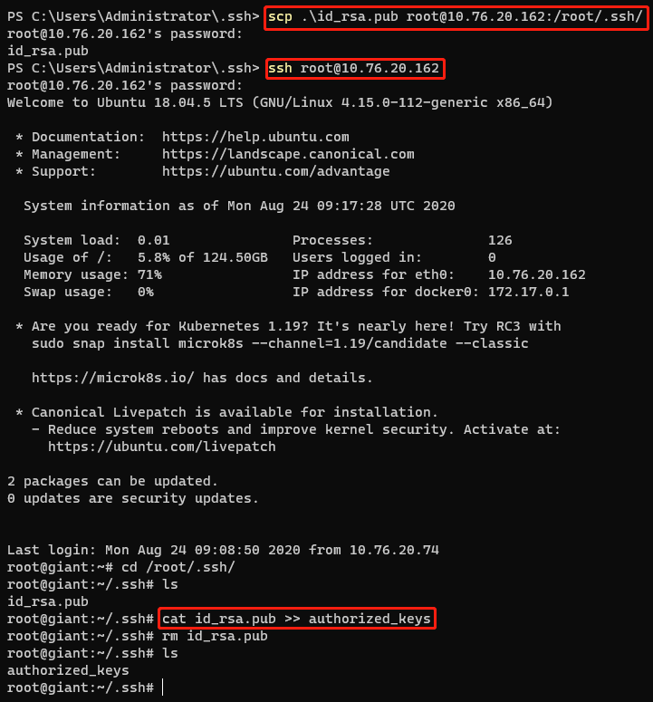

实现目标
在Ubuntu里配置好SSH服务
在Windows客户端用本地用户登录SSH (密码/RSA Key)
在Windows客户端用root用户登录SSH (密码/RSA Key)
配置SSH服务
1
2
3
4
5
6
7
8
9
10
11
12
|
sudo vi /etc/ssh/sshd_config
PermitRootLogin yes
PubkeyAuthentication yes
AuthorizedKeysFile .ssh/authorized_keys .ssh/authorized_keys2
PasswordAuthentication yes
RSAAuthentication yes
sudo service sshd restart
|
vi编辑说明：进入文件后，按i键启用编辑。完成后键入Esc，然后输入(保存退出:wq)(退出:q),包括冒号
SSH客户端(Windows)使用密码登录
1
2
3
| #本地用户帐号:giant
#服务器IP：10.76.20.162
ssh giant@10.76.20.162
|
在windows生成RSA Key
1
2
| #在Windows里生成RSA密钥文件
ssh-keygen.exe
|
会在指定目录下面生成两个文件
- id_rsa #私钥文件
- id_rsa.pub #公钥文件
1
2
| #通过SCP命令，把本的的公钥文件复制到服务器用户ssh目录/home/giant/.ssh/
scp .\id_rsa.pub giant@10.76.20.162:/home/giant/.ssh/
|
然后我们通过密码登录服务器，在用户目录下面就可以看到id_rsa.pub文件

1
2
3
4
|
cat id_rsa.pub >> authorized_keys
rm id_rsa.pub
|
在Windows客户端使用RSAKey登录SSH
1
2
3
| #在windows客户端，我们就可以指定私钥文件免密码登录到服务器
#-i:指定私钥文件路径
ssh giant@10.76.20.162 -i .\id_rsa
|
SSH客户端(Windows)使用密码登录root
启用root帐号
1
2
3
4
|
sudo passwd root
su root
|
1
2
| #在windows使用ssh登录root用户
ssh root@10.76.20.162
|
在Windows客户端使用RSAKey登录root
1
2
| #先在windows使用scp把公钥文件复制到服务器/root/.ssh/
scp .\id_rsa.pub root@10.76.20.162:/root/.ssh/
|
使用密码登录root后，使用cat把公钥文件输出到authorized_keys文件

1
2
3
4
|
cat id_rsa.pub >> authorized_keys
rm id_rsa.pub
|
然后我们就可以在windows客户端使用RSA Key名密码登录root
1
| ssh root@10.76.20.162 -i .\id_rsa
|
备注
- 为什么我们要把id_rsa.pub文件输出到authorized_keys文件
答：因为在sshd_config文件里，配置的AuthorizedKeysFile .ssh/authorized_keys .ssh/authorized_keys2
所以只要我们把公钥文件都输出到authorized_keys里面。然后其它客户端就可以用RSA Key私钥文件登录了